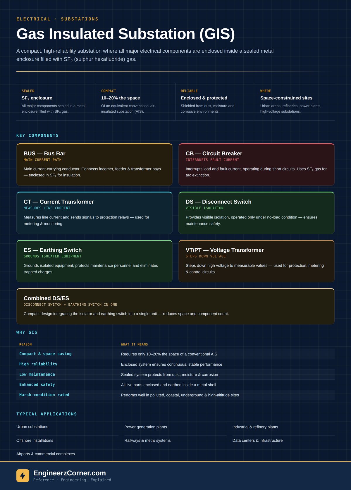

What is a GIS?
A Gas Insulated Substation (GIS) is a compact, high-reliability substation where all the major electrical components — busbars, circuit breakers, disconnect switches, earthing switches and instrument transformers — are enclosed inside a sealed metal housing filled with SF₆ gas. In a conventional air-insulated substation (AIS), those same components sit in open air, spaced apart by the clearance air insulation requires at that voltage. SF₆ has a much higher dielectric strength than air, so a GIS can pack the same electrical function into a fraction of the space.
That space saving is why GIS shows up wherever land is expensive or simply unavailable: dense urban substations, refineries and industrial plants, offshore platforms, and underground or indoor installations where an open-air switchyard isn't an option at all.

A GIS folds an entire switchyard's worth of components into a sealed, SF₆-filled enclosure — 10–20% the footprint of the air-insulated equivalent.
Key components
Every GIS bay is built from the same handful of functional blocks, each one a compact SF₆-filled module bolted to the next:
| Tag | Component | What it does |
|---|---|---|
| BUS | Bus Bar | Main current-carrying conductor; connects incomer, feeder and transformer bays. |
| CB | Circuit Breaker | Interrupts load and fault current; uses SF₆ gas itself to extinguish the arc. |
| CT | Current Transformer | Measures line current and feeds it to protection relays and metering. |
| DS | Disconnect Switch | Provides visible isolation; only ever operated with no load on the line. |
| ES | Earthing Switch | Grounds isolated equipment and clears trapped charge before maintenance. |
| VT/PT | Voltage Transformer | Steps down high voltage to a measurable level for protection and metering. |
Many modern GIS designs combine the disconnect switch and earthing switch into a single unit — a combined DS/ES — trading a slightly more complex mechanism for one fewer physical module and less space used per bay.
Why GIS over a conventional AIS
| Reason | What it means |
|---|---|
| Compact & space saving | Only 10–20% the footprint of an equivalent air-insulated substation. |
| High reliability & availability | A sealed system is far less exposed to the outside environment, so performance stays continuous and stable. |
| Low maintenance | Enclosed construction keeps dust, moisture and corrosive atmospheres away from live parts. |
| Enhanced safety | All live parts are enclosed and earthed inside a grounded metal shell — no exposed live conductors. |
| Suitable for harsh conditions | Performs well in polluted, coastal, underground and high-altitude sites where an AIS would struggle. |
Where GIS gets used
- 1Urban substations, where land is expensive or simply unavailable.
- 2Power generation plants and industrial & refinery sites.
- 3Offshore installations, where every square meter of platform space counts.
- 4Railways & metro systems, often built directly into underground or elevated structures.
- 5Data centers & infrastructure, airports and commercial complexes with tight footprints.
Key takeaways
- ✓A GIS puts the same functions as an AIS — busbar, breaker, disconnect, earthing switch, instrument transformers — inside a sealed, SF₆-filled metal enclosure.
- ✓SF₆ does double duty: it's the insulating medium throughout the enclosure and the arc-extinguishing medium inside the breaker.
- ✓The main reason to choose GIS is footprint — roughly 10–20% the space of an equivalent air-insulated substation.
- ✓Being sealed also buys reliability, low maintenance and safety in harsh or space-constrained sites — urban, offshore, underground, high-altitude.
- ✓A combined DS/ES module folds the disconnect and earthing switch into one unit, saving further space per bay.